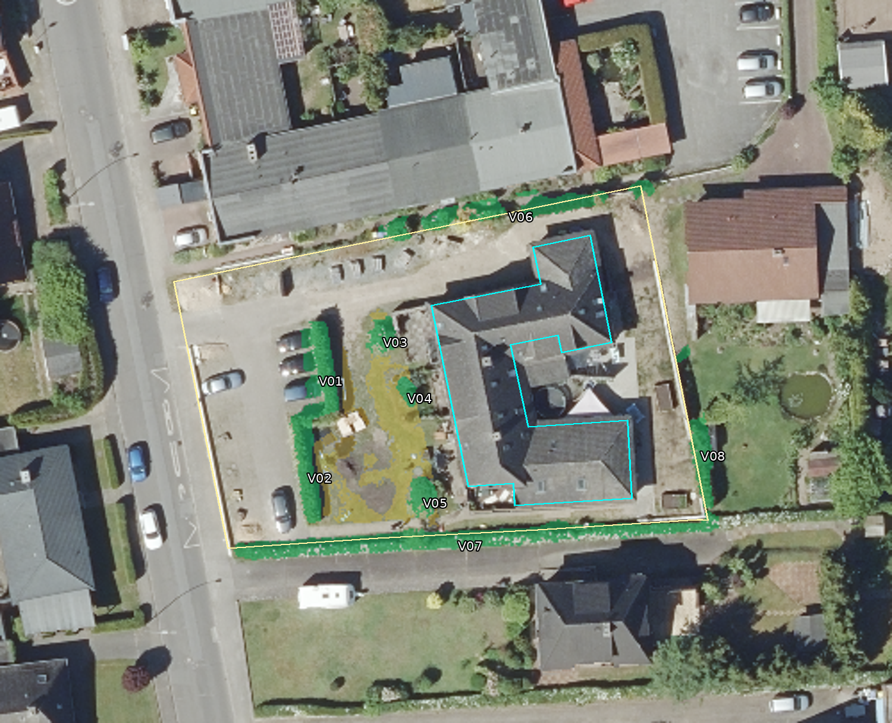
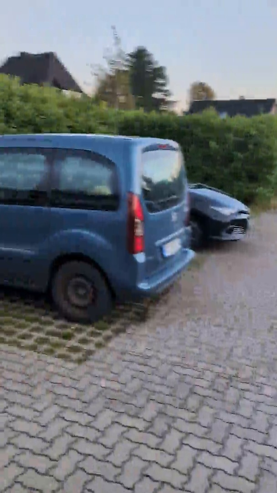
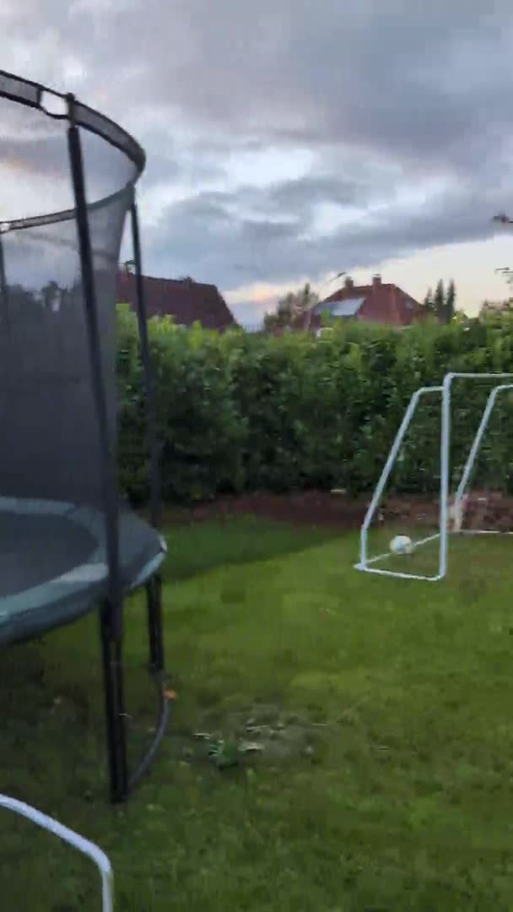
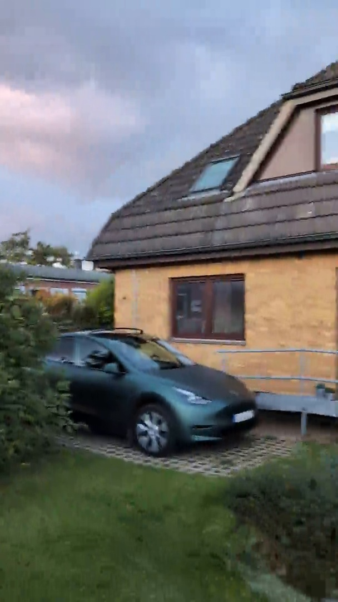
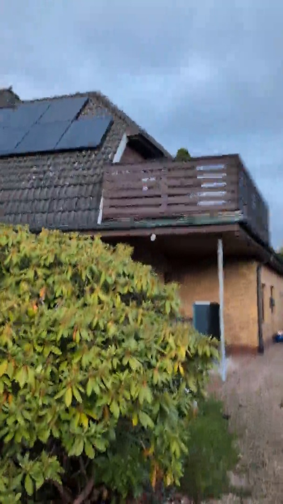
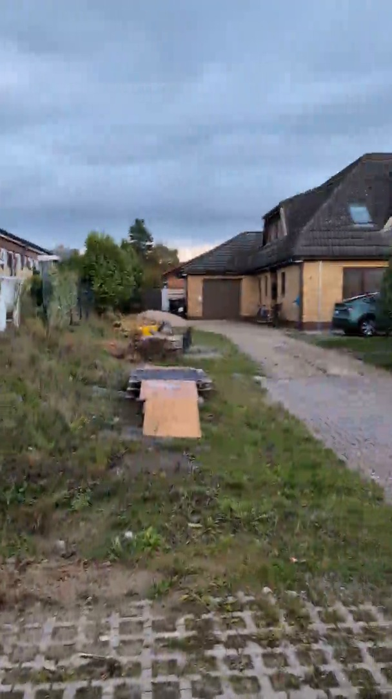

Vier Bereiche wurden als plausible Wiedererkennung für R11 ausgewählt. Das ist keine Einzelpflanzeninventur und keine Bestätigung gleicher Geometrie oder Höhe zwischen 2023, 2025 und dem Video.
R11-Umgebungsvorschau · Prüfbericht

Ursprüngliche R08-Zuordnung auf DOP 12.05.2025. © GeoBasis-DE/LVermGeo SH / CC BY 4.0.

Video 03:18
Bereich plausibel passend. Höhe und genaue Schnittkontur bleiben bDOM 2023, nicht videogeprüft.
Kein gemessenes Höhen- oder Positionsmaß aus diesem Einzelbild. Keine Gleichsetzung von Kronenmitte mit Stammposition.

Video 01:12
Der Heckenbereich ist hinter dem Trampolin sichtbar. Abgrenzung nur grob verglichen.
Kein gemessenes Höhen- oder Positionsmaß aus diesem Einzelbild. Keine Gleichsetzung von Kronenmitte mit Stammposition.

Video 01:01
Lage zwischen Fassadenfenster, Stellplatz und Fensterband plausibel. Mehrere Pflanzen nicht einzeln zugeordnet.
Kein gemessenes Höhen- oder Positionsmaß aus diesem Einzelbild. Keine Gleichsetzung von Kronenmitte mit Stammposition.

Video 01:20
Der runde Strauchbereich neben dem Balkon ist wiedererkennbar. Art, Stammstandort und Querschnitt werden nicht bestimmt.
Kein gemessenes Höhen- oder Positionsmaß aus diesem Einzelbild. Keine Gleichsetzung von Kronenmitte mit Stammposition.

Video 03:29
Einzelner Bewuchs bleibt sichtbar, die gesamte historische Grenzsaummaske ist aber nicht bestätigt. Deshalb keine pauschale Übernahme.
Kein gemessenes Höhen- oder Positionsmaß aus diesem Einzelbild. Keine Gleichsetzung von Kronenmitte mit Stammposition.